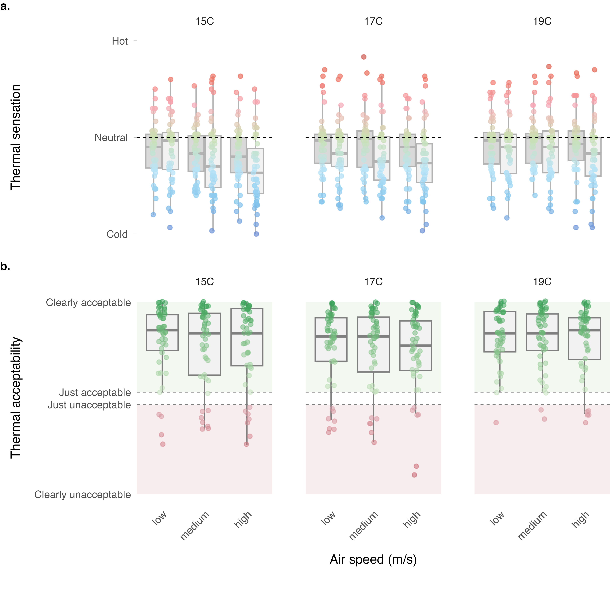
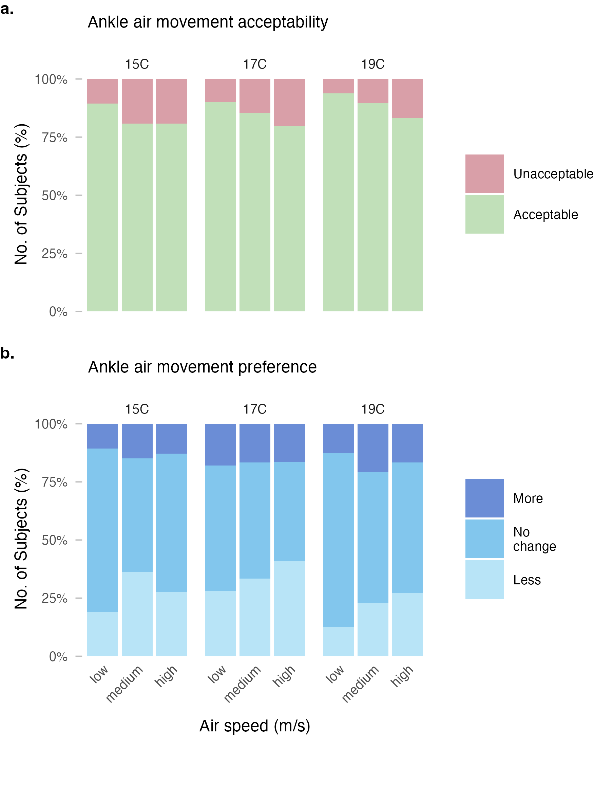

![]()
| Construct | Question | Scale type | Levels |
|---|---|---|---|
| Thermal sensation | How do you feel right now? | 7-point continuous | −3 (cold) −2 (cool) −1 (slightly cool) 0 (neutral) +1 (slightly warm) +2 (warm) +3 (hot) |
| Thermal comfort | Right now do you find this environment…? | 6-point continuous | −3 (very uncomfortable) −2 (uncomfortable) −1 (just uncomfortable) +1 (just comfortable) +2 (comfortable) +3 (very comfortable) |
| Thermal preference | Right now would you prefer to be…? | 3-point ordinal | −1 (warmer) | 0 (no change) | +1 (cooler) |
| Thermal acceptability | Please rate your acceptance of the current thermal environment | 4-point continuous | −2 (clearly unacceptable) −1 (just unacceptable) +1 (just acceptable) +2 (clearly acceptable) |
| Thermal satisfaction | How satisfied are you with the thermal environment right now? | 7-point continuous | −3 (very dissatisfied) −2 (dissatisfied) −1 (slightly dissatisfied) 0 (neither nor) +1 (slightly satisfied) +2 (satisfied) +3 (very satisfied) |
| Thermal pleasantness | Right now do you find this thermal environment…? | 7-point continuous | −3 (very unpleasant) −2 (unpleasant) −1 (slightly unpleasant) 0 (neutral) +1 (slightly pleasant) +2 (pleasant) +3 (very pleasant) |
| Air movement acceptability at ankles | Please rate your acceptance of air movement at your ankles | 4-point continuous | −2 (clearly unacceptable) −1 (just unacceptable) +1 (just acceptable) +2 (clearly acceptable) |
| Air movement preference at ankles | Right now around my ankles I would prefer…? | 3-point ordinal | −1 (less air movement) | 0 (no change) | +1 (more air movement) |
| Air quality preference | Please rate your acceptance of the current air quality in the room | 4-point continuous | −2 (clearly unacceptable) −1 (just unacceptable) +1 (just acceptable) +2 (clearly acceptable) |
| Clothing change | Did you adjust your upper body clothing? | binary | — |
Thermal comfort responses to ankle-level draft under winter clothing conditions
1 Center for the Built Environment, University of California, Berkeley, USA
2 Department of Architecture, College of Environmental Design, University of California, Berkeley, USA
3 Department of Civil and Environmental Engineering, College of Engineering, University of California, Berkeley, USA
✉ Correspondence: Tobias Kramer <t.kramer@berkeley.edu>
Abstract
1 Introduction
Cold downdraft near windows is a common source of local thermal discomfort in buildings during winter. When outdoor temperatures drop, the interior surface of windows, particularly large or poorly insulated glazing, becomes significantly cooler than the surrounding air. This temperature differential causes nearby air to cool, increase in density, and descend, creating a localized airflow pattern that can cause discomfort at the lower extremities of seated occupants (Heiselberg, 1994 ). Building designers typically address this issue by installing perimeter heating systems, such as radiators or in-floor heating, to counteract the downdraft effect and maintain occupant comfort.
The current approach to evaluating ankle draft risk relies on a predictive model presented in Liu et al. (2017), which estimates the predicted percentage dissatisfied (PPD) with ankle draft as a function of air speed and temperature at ankle level, as well as whole-body thermal sensation. This model, now incorporated into ASHRAE Standard 55 (ASHRAE, 2023), was derived from laboratory experiments conducted under cooling conditions typical of underfloor air distribution (UFAD) and displacement ventilation systems. Importantly, participants in these foundational studies, including an earlier investigation by Schiavon et al. (2016), wore summer clothing with exposed ankles, resulting in clothing insulation levels of approximately 0.5 clo.
However, building occupants in winter typically wear substantially different attire. Analysis of the ASHRAE Global Thermal Comfort Database II (Földváry Ličina et al., 2018) indicates that median clothing insulation in office environments during heating seasons is approximately 0.75 clo, with occupants commonly wearing long trousers, closed-toe shoes and socks that cover the ankle region. This discrepancy raises an important question: does the existing ankle draft model, calibrated for summer conditions with exposed skin, accurately predict discomfort when ankles are covered by clothing?
If the current model overestimates draft risk under winter clothing conditions, the practical implications are significant. Designers may be specifying perimeter heating systems that are larger than necessary, or installing them in situations where they could be avoided entirely. This has consequences for both first costs and operational energy consumption, as perimeter heating systems contribute to building energy use and associated carbon emissions. Conversely, if the model underestimates risk, occupants may experience discomfort that compromises satisfaction and productivity.
The objective of this study is to evaluate thermal comfort responses to ankle-level draft under winter clothing conditions through controlled laboratory experiments. Specifically, we aim to: (1) characterize local and whole-body thermal sensation and comfort responses across a range of supply air temperatures and air speeds representative of window downdraft conditions; (2) compare observed dissatisfaction rates with predictions from the existing ankle draft model; and (3) assess whether the current ASHRAE 55 criteria require adjustment for winter scenarios. The findings are intended to inform guidance on perimeter heating requirements and support more energy-efficient building design without compromising occupant comfort.
2 Methods
2.1 Experimental design
We conducted a controlled laboratory experiment using a within-subjects repeated-measures design. Each participant was exposed to nine experimental conditions in a 3×3 factorial arrangement, varying supply air temperature (SAT) at three levels (15°C, 17°C, 19°C) and air speed at ankle level at three levels (low, medium, high; ranging between 0.1–0.7 m/s). The SAT and air speeds were selected to represent the range of conditions associated with window downdraft under typical winter conditions, informed by computational fluid dynamics simulations conducted as part of a broader research collaboration .
Participants attended four sessions: an introductory session for explaining the experiment and obtaining consent, followed by three experimental sessions of approximately two hours each. Each experimental session corresponded to one SAT level, with participants experiencing all three air speed conditions within that session in a counterbalanced order. Sessions were scheduled on separate days to minimize carryover effects and subjects were allowed to attend the three sessions in their preferred order.
2.2 Climate chamber and apparatus
The experiment was conducted in a climate-controlled chamber at the Center for the Built Environment, UC Berkeley. The chamber floor area is approximately 25 m², configured with up to three workstations to allow simultaneous testing of multiple participants. Ambient room conditions were maintained at approximately 22°C operative temperature, 50% relative humidity, and background air velocity below 0.1 m/s, targeting a whole-body thermal sensation of approximately −0.5 (slightly cool) on the ASHRAE seven-point scale.
PLACEHOLDER GRAPHIC
A custom displacement diffuser was used to deliver conditioned air to the ankle region of seated participants. The diffuser was positioned 0.7 m behind each workstation, directing airflow toward the participants’ lower legs from behind and simulating the approach direction of window downdraft. The diffuser was connected to an independent air handling unit capable of delivering supply air at the target temperatures and flow rates. Turbulence intensity at the measurement location was approximately 30%, consistent with values reported in prior ankle draft studies (Liu et al., 2017).
2.3 Environmental monitoring
Air temperature was measured at head-height at each workstation using calibrated Atmocube monitors (Atmotech Inc., United States; air temperature: -40 to +125°C, ± 0.5°C, relative humidity: 0 to 100%RH, ± 2 %RH, CO2: 0 to 5000 ppm, ± 50 ppm + 2.5% of reading at standard room levels) positioned within 0.5 m of participants. Air velocity at ankle level (0.1 m) was measured using AirDistSys 5000 omnidirectional hot-wire anemometers (Sensor Electronic, Poland, air velocity: 0.05-5 m/s, accuracy: ±0.02 m/s ±2% of reading; temperature: -10 to +50°C, accuracy: ±0.2°C, sampling interval: 1 s). Supply air temperature was monitored continuously at the diffuser outlet. Room-level measurements of relative humidity and CO2 concentration were recorded throughout each session.
2.4 Participants
We recruited participants from the university community and local area through the Experimental Social Science Laboratory (Xlab) platform and email outreach to individuals who had participated in previous studies and consented to future contact. Eligible participants were between 21 and 55 years of age, fluent in English, and free from chronic cardiorespiratory conditions or recent major surgery. Pregnant individuals were excluded.
2.5 Clothing protocol
To simulate typical winter office attire, participants were instructed to wear a long-sleeve top, long trousers (ending just above the ankle), thin socks, and closed-toe shoes. This ensemble targets a clothing insulation of approximately 0.75 clo, consistent with the median value observed in office buildings during heating seasons (Földváry Ličina et al., 2018). Participants were permitted to make minor clothing adjustments during sessions (e.g., rolling sleeves), and any changes were recorded.
2.6 Experimental protocol
Upon arrival for each experimental session, participants were checked for elevated temperature and fitted with iButton skin temperature sensors ((Thermochron, Maxim Integrated, USA, Type DS1923, 20°C to 85°C, accuracy: ±0.1°C, resolution: 0.0625°C) at standardized locations (lower leg, feet). Participants then entered the climate chamber and completed a 20-minute adaptation period at their assigned workstation under baseline conditions.
Following adaptation, participants were exposed to three consecutive 20-minute conditions at different air speed levels, with 20-minute rest periods between conditions. The sequence of air speed conditions was counterbalanced across participants and sessions. During each exposure period, participants completed standardized questionnaires at the end of each interval.
2.7 Subjective measurements
The perception of the thermal environment was assessed using validated scales consistent with prior ankle draft research and ASHRAE Standard 55 requirements. Constructs and their scales used in the questionnaires are summarized in Table 1 below.
Surveys were administered electronically via Qualtrics. Participants were not required to respond to any individual question, though completion rates were monitored.
2.8 Physiological measurements
Skin temperature was recorded continuously using the iButton sensors attached with medical-grade hypoallergenic tape. Sensors were placed on the lateral lower leg (mid-calf) and feet. Skin temperature data were used to assess local cooling responses and as physiological correlates of subjective thermal sensation.
2.9 Statistical analysis and data processing
3 Results
3.1 Participants and environmental conditions
| Sex | No. Subjects | Age [a] | Height [m] | Weight [kg] | Body Mass Index (BMI) |
|---|---|---|---|---|---|
| All | 51 | 23.5 (+/- 5.9) | 1.70 (+/- 0.10) | 69.0 (+/- 11.8) | 23.9 (+/- 4.1) |
| Female | 28 | 23.5 (+/- 6.4) | 1.65 (+/- 0.06) | 65.6 (+/- 11.5) | 24.3 (+/- 4.7) |
| Male | 20 | 23.9 (+/- 5.6) | 1.79 (+/- 0.09) | 74.8 (+/- 9.6) | 23.4 (+/- 3.0) |
| Third Gender / Other | 3 | 22.0 (+/- 1.0) | 1.61 (+/- 0.02) | 62.0 (+/- 14.9) | 23.9 (+/- 5.7) |
Table 2 summarizes the demographic information of the study subjects. A total of 51 subjects participated in the study (28 female, 20 male, 3 other), with a mean age of 23.5 (+/- 5.9) years.
| Measurement | 15C | 17C | 19C |
|---|---|---|---|
| Air temperature, head level (°C) | 21.9 ( +/- 0.2) | 21.9 ( +/- 0.3) | 21.9 ( +/- 0.2) |
| Relative humidity (%) | 54.9 ( +/- 5.5) | 52.3 ( +/- 5) | 51.2 ( +/- 4.8) |
| Air temperature, ankle level (°C) | 17.6 ( +/- 0.2) | 18.3 ( +/- 0.2) | 19.7 ( +/- 0.2) |
| Air speed, low (m/s) | 0.14 ( +/- 0.02) | 0.16 ( +/- 0.01) | 0.18 ( +/- 0.01) |
| Air speed, medium (m/s) | 0.37 ( +/- 0.02) | 0.39 ( +/- 0.03) | 0.42 ( +/- 0.03) |
| Air speed, high (m/s) | 0.64 ( +/- 0.04) | 0.62 ( +/- 0.01) | 0.65 ( +/- 0.03) |
| Turbulence, low (%) | 0.36 ( +/- 0.02) | 0.34 ( +/- 0.01) | 0.3 ( +/- 0.01) |
| Turbulence, medium (%) | 0.26 ( +/- 0.02) | 0.23 ( +/- 0.01) | 0.23 ( +/- 0.02) |
| Turbulence, high (%) | 0.24 ( +/- 0.01) | 0.24 ( +/- 0.01) | 0.23 ( +/- 0.01) |
Table 3 provides an overview of the measured environmental conditions. Across all three sessions, head-level air temperature remained stable at 21.9 ( +/- 0.2) °C, 21.9 ( +/- 0.3) °C, and 21.9 ( +/- 0.2) °C, and relative humidity was comparable across sessions, confirming stable background thermal conditions.
As the primary experimental manipulation, we set supply air temperatures to 15°C, 17°C, and 19°C to simulate the effect of window downdraft. Ankle-level temperatures were slightly higher than the supply temperature due to mixing with the warmer ambient air, but remained stable across all sessions. Within each session, we exposed subjects to three airspeed levels at separate workstations. We measured consistent air speeds across all three workstations and sessions, confirming reliable reproduction of the low, medium, and high airspeed conditions. Turbulence intensities remained low throughout, indicating stable and controlled airflow.
3.2 Thermal sensation and comfort responses

3.3 Air movement acceptability at ankles

3.4 Dissatisfaction with ankle draft
3.5 Updated model for winter conditions
4 Discussion
The primary finding of this study is [summary of main result regarding winter clothing effect on ankle draft sensitivity].
4.1 Comparison with prior research
4.2 Mechanisms
4.3 Implications for building design
4.4 Relationship to standards
4.5 Limitations
5 Conclusions
5.1 Limitations
6 Conclusions
Declaration of competing interest
All authors declare XYZ competing interest. The Center for the Built Environment (CBE) at the University of California, Berkeley, with which the authors are affiliated, is advised and funded in part by approximately 50 partners that represent a diversity of organizations from the building industry, including manufacturers, building owners, facility managers, contractors, architects, engineers, government agencies, and utilities.
Data availability
The datasets generated and analyzed during the current study as well as the full source code of the data analysis workflow are available in the following GitHub repository: XXX.
Declaration of Generative AI and AI-assisted technologies in the writing process
During the preparation of this work, the authors utilized the chatbot Claude to enhance the language and readability of the content. Subsequently, they reviewed and edited the material as required, while maintaining full accountability for the publication’s content.
Acknowledgements
The Center for the Built Environment at the University of California, Berkeley supported this research.
References
ASHRAE. (2023). ANSI/ASHRAE Standard 55-2023: Thermal Environmental Conditions for Human Occupancy. American Society of Heating, Refrigerating; Air-Conditioning Engineers.
Földváry Ličina, V., Cheung, T., Zhang, H., Dear, R. de, Parkinson, T., Arens, E., Chun, C., Schiavon, S., Luo, M., Brager, G., Li, P., Kaam, S., Adebamowo, M. A., Andamon, M. M., Babich, F., Bouden, C., Bukovianska, H., Candido, C., Cao, B., … Zhou, X. (2018). Development of the ASHRAE Global Thermal Comfort Database II. Building and Environment, 142, 502–512. https://doi.org/10.1016/j.buildenv.2018.06.022
Heiselberg, P. (1994). Draft from cold vertical surfaces: A review of the state of the art. ASHRAE Transactions, 100, 1073–1081.
Liu, S., Schiavon, S., Kabanshi, A., & Nazaroff, W. W. (2017). Predicted percentage dissatisfied with ankle draft. Indoor Air, 27(4), 852–862. https://doi.org/10.1111/ina.12364
Schiavon, S., Rim, D., Pasut, W., & Nazaroff, W. W. (2016). Sensation of draft at uncovered ankles for women exposed to displacement ventilation and underfloor air distribution systems. Building and Environment, 96, 228–236. https://doi.org/10.1016/j.buildenv.2015.11.009